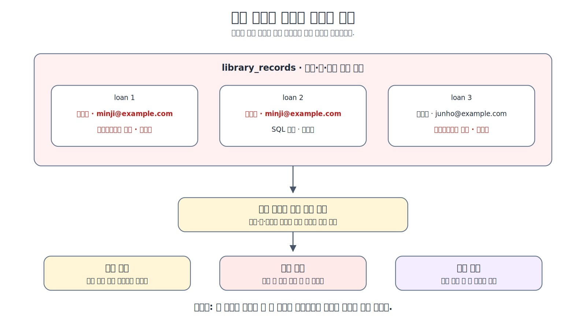
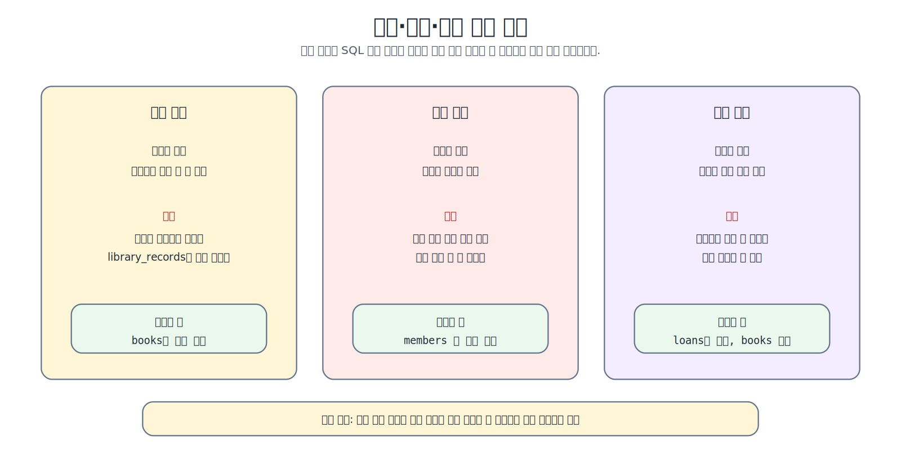
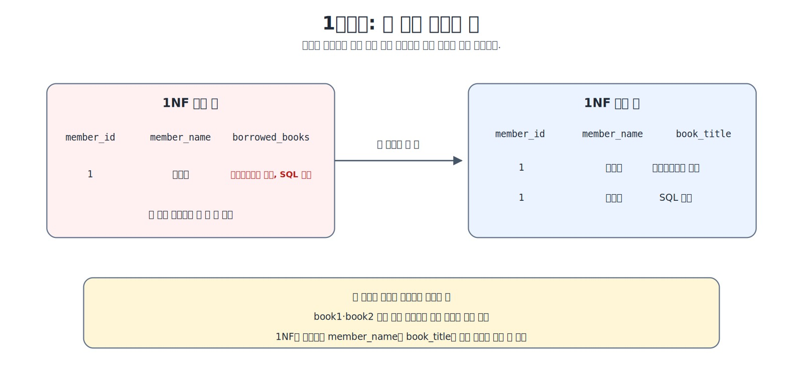
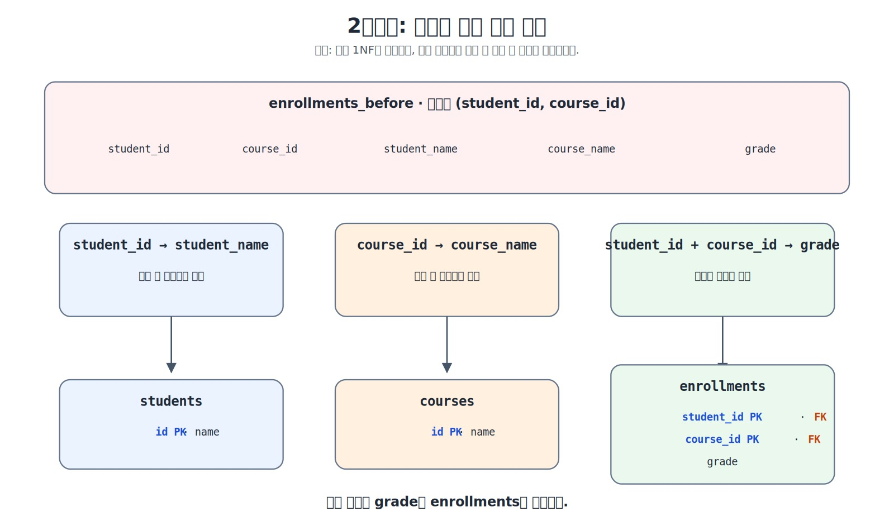
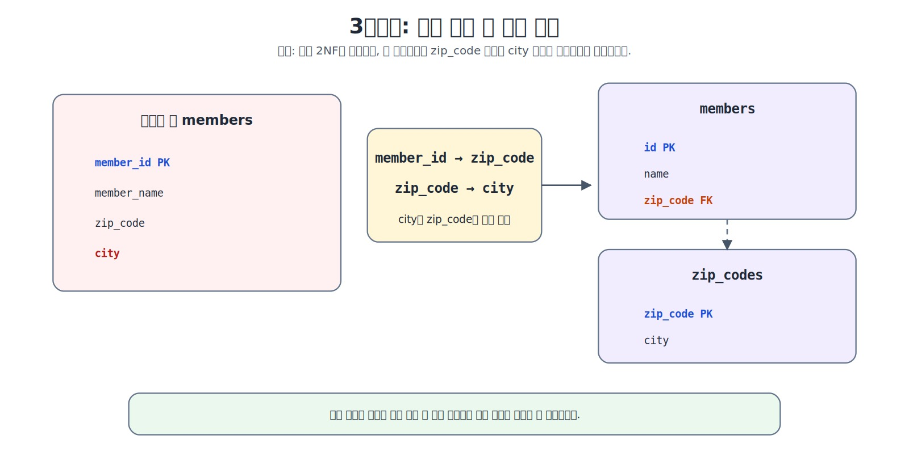
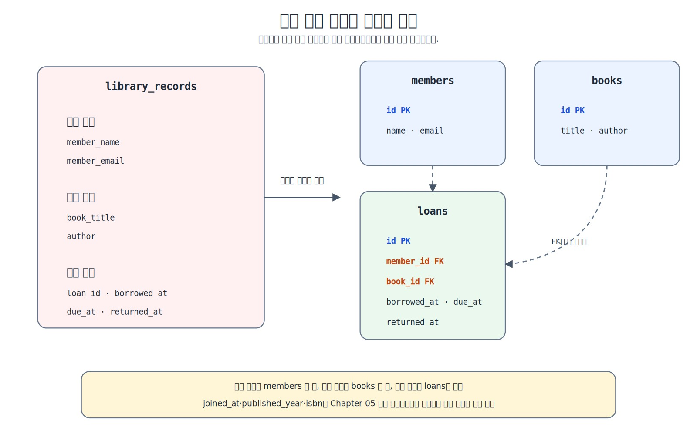
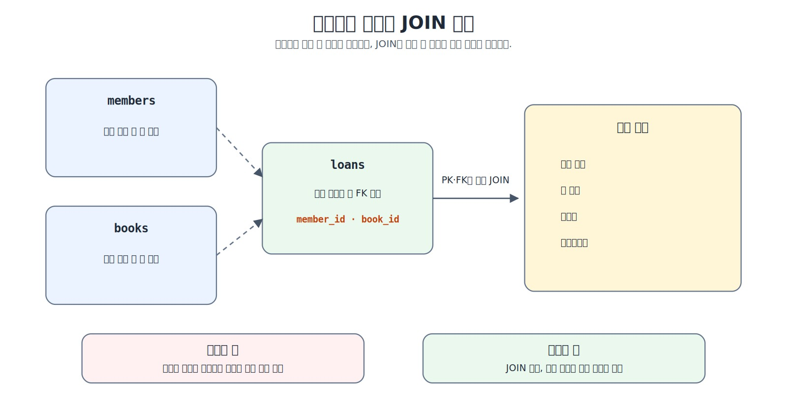
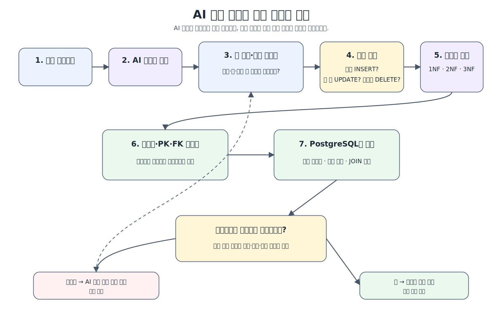

정규화와 데이터 무결성으로 좋은 테이블 만들기
좋은 테이블은 단순히 데이터를 저장하는 구조가 아니라 같은 사실의 불필요한 복사를 줄이고, 확정된 업무 규칙을 제약조건으로 지켜 데이터가 변해도 의미와 일관성을 유지하는 구조입니다.
그리고 확정된 업무 규칙을 데이터베이스가 직접 지키게 하려면 무엇이 필요할까?
이 장을 시작하기 전에
이 장은 정규화와 데이터 무결성을 처음 배우는 독자를 대상으로 합니다. Chapter 05에서 테이블의 한 행 의미, 기본키·외래키와 관계를 이해했다면 별도의 정규화 경험은 필요하지 않습니다.
Chapter 05에서는 요구사항을 바탕으로 members, books, loans 구조를 설계하고, 이메일·ISBN 고유성, ISBN의 필수 여부, 날짜 순서와 동시 활성 대여 같은 정책을 미확정 질문으로 남겼습니다. 이번 장에서는 서로 다른 사실이 한 테이블에 섞일 때 생기는 문제를 분석하고, 필요한 정책을 확정한 뒤 PostgreSQL 제약조건으로 구현합니다.
한 행의 의미 확인
→ 위험한 중복과 이상 현상 찾기
→ 각 열의 주인 결정
→ 1NF·2NF·3NF 질문 적용
→ 정규화된 구조 만들기
→ 정책 확정
→ 제약조건 추가
→ 정상·경계·오류 데이터 검증
이 장을 마치면
다음 작업을 수행할 수 있습니다.
- 위험한 중복과 정상적인 반복을 구분한다.
- 삽입·수정·삭제 이상을 설명한다.
- 각 열의 주인 테이블을 판단한다.
- 제1·제2·제3정규형의 핵심 질문을 적용한다.
- 확정 규칙을 적절한 제약조건과 연결한다.
- 정규화와 데이터 무결성 제약조건의 역할을 구분한다.
- 정상·경계·오류 데이터로 제약조건을 검증한다.
- 기존 데이터가 있는 테이블에 규칙을 추가하기 전에 영향 범위를 확인한다.
학습 표시
- 핵심 학습: 정규화와 기본 무결성 제약조건을 이해하는 데 필요한 내용
- 선택 학습:
ALTER TABLE, 삭제 정책과 부분 고유 인덱스를 확장하는 내용- 심화 학습: 후보키, 기간 중첩과 운영 마이그레이션을 다루는 내용
핵심 원칙
정규화는 각 사실의 주인을 정하는 과정이고, 무결성 제약조건은 확정된 업무 규칙에 따라 저장 가능한 값과 관계의 경계를 정하는 장치입니다.
1. 좋은 테이블은 데이터가 변할 때 드러난다
처음 데이터를 입력할 때는 하나의 큰 테이블이 편해 보일 수 있습니다.
| loan_id | member_name | member_email | book_title | author | borrowed_at | due_at | returned_at |
|---|---|---|---|---|---|---|---|
| 1001 | 김민지 | minji@example.com | 데이터베이스 입문 | 문길래 | 2026-04-01 | 2026-04-15 | 2026-04-02 |
| 1002 | 김민지 | minji@example.com | SQL 기초 | 홍길동 | 2026-04-02 | 2026-04-16 | NULL |
| 1003 | 이준호 | junho@example.com | 데이터베이스 입문 | 문길래 | 2026-04-03 | 2026-04-17 | NULL |
한 행은 대여 사건을 나타내지만 회원과 도서의 현재 정보까지 함께 저장합니다. 이 구조를 실제 저장 테이블로 사용하면 다음 문제가 생깁니다.
김민지의 이름과 이메일이 대여 기록마다 반복된다.
같은 도서의 제목과 저자가 여러 행에 반복된다.
회원 이메일을 바꿀 때 여러 행을 수정해야 한다.
대여되지 않은 새 도서를 독립적으로 등록하기 어렵다.
마지막 대여 행을 삭제하면 도서 정보까지 사라질 수 있다.

그림 6-1 중복 저장이 만드는 정규화 문제
좋은 테이블은 처음 입력하기 쉬운 구조가 아니라, 데이터가 추가·수정·삭제될 때도 사실의 의미와 일관성을 지킬 수 있는 구조입니다.
2. 위험한 중복과 의미 있는 반복
값이 반복된다고 모두 잘못된 것은 아닙니다.
여러 대여 행에 같은 회원 이메일이 복사됨
→ 같은 현재 사실을 여러 곳에서 관리하는 위험한 중복
loans_nf.member_id에 101이 여러 번 나타남
→ 회원 101이 여러 대여 사건을 가진다는 정상적인 반복
여러 주문 행에 주문 당시 가격이 저장됨
→ 과거 시점의 사실을 보존하는 의미 있는 이력
다음 질문으로 구분합니다.
같은 사실의 복사본인가?
각 행마다 독립적인 업무 의미가 있는가?
값이 바뀔 때 한 곳만 수정하면 되는가?
사건 당시 값을 보존하기 위해 의도적으로 저장한 것인가?
정규화의 목적은 반복을 무조건 제거하는 것이 아니라, 같은 사실의 복사본이 서로 다른 값이 되는 위험을 줄이는 것입니다.
3. 삽입·수정·삭제 이상
잘못된 테이블 경계는 데이터 변경 과정에서 이상 현상을 만듭니다.
| 이상 현상 | 의미 | 도서 대여 사례 |
|---|---|---|
| 삽입 이상 | 독립적인 정보를 자연스럽게 추가하기 어려움 | 아직 대여되지 않은 도서를 등록하기 어려움 |
| 수정 이상 | 같은 사실을 여러 곳에서 수정해야 함 | 회원 이메일을 여러 대여 행에서 수정해야 함 |
| 삭제 이상 | 한 행을 지울 때 보존할 정보까지 사라짐 | 마지막 대여 행 삭제 시 도서 정보도 사라짐 |

그림 6-2 삽입·수정·삭제 이상 현상
이상 현상은 SQL 문법 오류가 아닙니다. SQL은 정상적으로 실행되지만 데이터의 의미가 손상되는 구조 문제입니다.
4. 한 행의 의미와 열의 주인
정규화를 시작할 때 먼저 각 테이블의 한 행이 무엇을 나타내는지 정합니다.
library_records_raw 한 행
→ 대여 사건 한 건이지만 회원·도서의 현재 사실까지 혼합
members_nf 한 행
→ 회원 한 명
books_nf 한 행
→ 이 장에서 대여 대상으로 취급하는 간소화된 도서 항목 한 건
여기서 “대여 대상으로 관리하는 도서 한 건”이라는 표현은 실제 복본 한 권을 뜻하지 않고, 이 장의 단순화 범위에서 사용하는 도서 항목 한 건을 뜻합니다.
loans_nf 한 행
→ 특정 회원이 특정 도서를 대여한 사건 한 건
| 열 | 표현하는 사실 | 적절한 주인 |
|---|---|---|
member_name, member_email |
회원의 현재 정보 | members_nf |
book_title, author |
도서의 현재 정보 | books_nf |
borrowed_at, due_at, returned_at |
대여 사건 | loans_nf |
member_id, book_id |
대여와 부모 행의 관계 | loans_nf |
다음 질문을 반복합니다.
이 값은 누구를 설명하는가?
값이 바뀌는 이유와 시점은 무엇인가?
한 곳에서 관리해야 하는 현재 사실인가?
사건 당시 값을 보존해야 하는 이력인가?
5. 함수적 종속의 기초
함수적 종속은 업무 범위 안에서 어떤 값이 다른 값을 결정하는 관계입니다.
X → Y
같은 X 값이면 Y도 항상 같아야 한다는 업무 규칙을 의미합니다.
member_id → member_name, member_email
book_id → book_title, author
loan_id → borrowed_at, due_at, returned_at
샘플에서 값이 우연히 반복된다고 함수적 종속이 되는 것은 아닙니다. 결정 관계는 업무 규칙과 식별 기준에 근거해야 합니다.
6. 제1정규형: 독립 값을 한 셀이나 반복 열에 섞지 않는다
제1정규형은 각 속성이 정의된 도메인의 값을 갖고 반복 그룹이 없도록 관계를 구성하는 기준입니다. 이 책에서는 입문 단계의 판단 질문으로, 개별적으로 검색·연결·수정해야 할 반복값을 쉼표 목록이나 book1, book2 같은 반복 열에 묶어 두지 않는지 확인합니다.
| member_id | member_name | borrowed_books |
|---|---|---|
| 101 | 김민지 | 데이터베이스 입문, SQL 기초 |
borrowed_books 안의 각 책을 독립적으로 검색하거나 외래키로 연결하기 어렵습니다. 다음처럼 한 대여당 한 행으로 표현할 수 있습니다.
| member_id | member_name | book_title |
|---|---|---|
| 101 | 김민지 | 데이터베이스 입문 |
| 101 | 김민지 | SQL 기초 |

그림 6-3 제1정규형: 독립 값을 행으로 분리하기
book1, book2, book3처럼 반복 열을 만드는 방식도 피합니다. 다만 JSON 문서 자체가 하나의 업무 값인 경우처럼 저장 목적과 조회 방식이 다른 구조는 별도로 판단해야 하며, JSONB는 Chapter 12에서 다룹니다.
7. 제2정규형: 복합키 일부에만 의존하는 열을 분리한다
제2정규형은 제1정규형을 만족한 관계에서 비키 속성이 후보키 전체가 아니라 그 일부에만 의존하는 부분 종속이 있는지 확인합니다. 입문 단계에서는 복합 후보키가 있는 테이블을 중심으로 살펴보면 이해하기 쉽습니다.
| student_id | course_id | student_name | course_name | grade |
|---|---|---|---|---|
| 1 | 101 | 김민지 | 데이터베이스 | A |
| 1 | 102 | 김민지 | 알고리즘 | B |
| 2 | 101 | 이준호 | 데이터베이스 | A |
이 예제에서는 한 학생이 같은 강의를 한 번만 수강한다고 가정하고 (student_id, course_id)를 복합키로 봅니다.
student_id → student_name
course_id → course_name
student_id + course_id → grade
따라서 다음처럼 각 열의 주인으로 분리합니다.
students(id, name)
courses(id, name)
enrollments(student_id, course_id, grade)

그림 6-4 제2정규형: 복합키 일부 의존 분리
모든 후보키가 단일 열이라면 후보키의 일부라는 개념이 없으므로 부분 종속은 발생하지 않습니다. 재수강·학기·분반을 관리한다면 term_id, section_id 같은 식별 요소를 추가로 검토해야 합니다.
8. 제3정규형: 일반 열이 다른 일반 열을 결정하는지 확인한다
제3정규형은 제2정규형을 만족한 관계에서 비키 속성이 다른 비키 속성을 통해 후보키에 전이적으로 의존하는 구조가 있는지 확인합니다. 이 책에서는 대표적인 전이 종속 패턴을 중심으로 살펴봅니다.
다음 예제에서는 설명을 단순화하기 위해 하나의
zip_code가 하나의city를 결정한다고 가정합니다. 실제 주소 체계는 별도 기준을 확인해야 합니다.
| member_id | member_name | zip_code | city |
|---|---|---|---|
| 1 | 김민지 | 04524 | 서울 |
| 2 | 이준호 | 04524 | 서울 |
| 3 | 박서연 | 48058 | 부산 |
member_id → zip_code
zip_code → city
city는 회원 ID보다 우편번호에 직접 의존하므로 다음처럼 분리할 수 있습니다.
members(id, name, zip_code)
zip_codes(zip_code, city)

그림 6-5 제3정규형: 일반 열 간 의존 분리
값이 반복된다는 이유만으로 테이블을 분리하지 않습니다. 일관된 결정 규칙과 독립적으로 관리할 필요가 있는지 확인해야 합니다.
9. 도서 대여 구조 정규화하기
정규화 전 구조는 회원·도서·대여 사실이 한 행에 섞여 있습니다.
library_records_raw(
loan_id,
member_name,
member_email,
book_title,
author,
borrowed_at,
due_at,
returned_at
)
열의 주인을 기준으로 다음 구조로 분리합니다.
members_nf(id, name, email, joined_at)
books_nf(id, title, author, published_year, isbn)
loans_nf(id, member_id, book_id, borrowed_at, due_at, returned_at)

그림 6-6 도서 대여 구조 정규화 흐름
joined_at, published_year, isbn은 원시 테이블을 나누는 과정에서 자동으로 생긴 값이 아닙니다. Chapter 05의 전체 요구사항에서 가져온 속성입니다. 정규화는 존재하지 않던 업무 데이터를 만들어 내는 작업이 아닙니다. 또한 위 구조는 개념을 설명하기 위한 정규화 결과입니다. 실제 원시 데이터를 새 테이블로 이전하려면 회원·도서를 식별할 원천 키나 매핑 규칙, 중복 처리 기준과 데이터 검증 절차가 별도로 필요합니다.
10. 미확정 정책을 확정 규칙으로 바꾸기
Chapter 05에서 남긴 질문 가운데 이번 실습에 필요한 정책을 다음처럼 확정합니다. Chapter 05에서 이미 필수로 사용한 회원 이름·이메일·가입일, 도서 제목·저자, 대여의 회원·도서·대여일·반납예정일도 정규화 후 테이블에 다시 적용합니다. 01_normalization_schema.sql에서는 제약조건 추가 과정을 보여 주기 위해 이 규칙들을 잠시 생략하고, 04_add_integrity_rules.sql에서 기존 데이터 검사 후 복원합니다.
| ID | 확정 규칙 | 구현 후보 |
|---|---|---|
| C-01 | 정확히 같은 이메일 문자열 중복 금지 | UNIQUE (email) |
| C-02 | ISBN은 필수이며 같은 ISBN 문자열 중복 금지 | NOT NULL + UNIQUE (isbn) |
| C-03 | 회원 이름과 도서 제목의 공백 문자열 금지 | CHECK |
| C-04 | 반납예정일은 대여일 이상 | CHECK |
| C-05 | 실제반납일은 NULL 또는 대여일 이상 |
CHECK |
| C-06 | 존재하는 회원·도서만 참조 | FOREIGN KEY |
| C-07 | 대여 이력이 있는 부모 행 삭제 금지 | ON DELETE RESTRICT |
| C-08 | 도서당 미반납 대여 최대 한 건 | 부분 고유 인덱스 |
다음은 이번 장의 단순화 범위입니다.
이메일 대소문자와 별칭 정규화는 다루지 않는다.
동일 ISBN의 여러 실물 복본은 별도 모델로 분리하지 않는다. 따라서 이번 실습에서는 ISBN을 도서 항목의 필수 고유값으로 확정한다.
여러 저자 관계는 다루지 않는다.
과거 대여 기간 전체의 중첩은 검사하지 않는다.
현재 미반납 대여의 중복만 차단한다.
제약조건은 좋은 아이디어를 임의로 추가하는 기능이 아니라, 요구사항이나 명시적으로 확정한 가정을 DBMS가 검사할 수 있도록 바꾸는 기능입니다.
11. 정규화와 데이터 무결성의 역할
정규화된 테이블만 만들었다고 잘못된 데이터가 자동으로 차단되지는 않습니다.
정규화
→ 사실을 적절한 테이블에 배치
무결성 제약조건
→ 확정된 규칙에 따라 허용할 값과 관계를 선언
무결성 규칙은 다음처럼 분류할 수 있습니다.
| 무결성 유형 | 대표 구현 | 확인 내용 |
|---|---|---|
| 개체 무결성 | PRIMARY KEY |
각 행을 안정적으로 구분하는가 |
| 필수값·도메인 무결성 | 타입, NOT NULL, CHECK |
허용된 형태와 범위인가 |
| 고유성 | UNIQUE |
업무상 중복되면 안 되는가 |
| 참조 무결성 | FOREIGN KEY |
존재하는 부모를 참조하는가 |
| 여러 행의 업무 규칙 | 고유 인덱스·트랜잭션·애플리케이션 | 여러 행을 함께 비교해야 하는가 |
12. PRIMARY KEY·NOT NULL·UNIQUE·CHECK
PRIMARY KEY
기본키는 테이블 안의 각 행을 고유하게 식별합니다.
id INTEGER GENERATED BY DEFAULT AS IDENTITY PRIMARY KEY
NOT NULL
열의 최종 저장값으로 NULL을 허용하지 않습니다.
name VARCHAR(50) NOT NULL
INSERT에서 열을 생략했더라도 DEFAULT가 있으면 기본값이 채워질 수 있습니다. 기본값도 없어서 최종 값이 NULL이 되면 NOT NULL 위반입니다. NOT NULL은 빈 문자열이나 공백 문자열까지 막지는 않습니다.
UNIQUE
업무상 중복되면 안 된다고 확정한 값을 제한합니다.
CONSTRAINT uq_members_nf_email UNIQUE (email)
PostgreSQL의 기본 UNIQUE 동작에서는 NULL을 서로 같은 값으로 보지 않으므로, NULL을 허용하는 열에는 여러 NULL이 존재할 수 있습니다. 필요하면 NULLS NOT DISTINCT를 사용해 NULL도 같은 값처럼 취급할 수 있습니다. 이번 실습의 이메일과 ISBN은 NOT NULL과 UNIQUE를 함께 적용하므로 이 차이가 실제 저장 결과에 영향을 주지는 않습니다.
CHECK
한 행 안의 값이 만족해야 할 조건을 선언합니다.
CONSTRAINT chk_loans_nf_due_date
CHECK (due_at >= borrowed_at)
CHECK 식이 FALSE이면 저장이 거부됩니다. PostgreSQL에서는 식의 결과가 TRUE이거나 NULL이면 제약조건을 만족한 것으로 처리하므로, 필수값까지 보장하려면 NOT NULL이 별도로 필요합니다.
grade INTEGER NOT NULL
CHECK (grade BETWEEN 1 AND 4)
제약조건에 uq_, chk_, fk_처럼 의미 있는 이름을 붙이면 오류 메시지에서 실패한 규칙을 찾기 쉽습니다.
13. 외래키와 참조 무결성
외래키는 자식 테이블의 값이 실제 부모 행을 참조하도록 보장합니다.
CONSTRAINT fk_loans_nf_member
FOREIGN KEY (member_id)
REFERENCES public.members_nf(id)
ON DELETE RESTRICT
존재하지 않는 회원이나 도서를 참조하는 대여 기록은 저장할 수 없습니다.
자식 행은 존재하는 부모만 참조한다.
부모 행 삭제 시 기존 자식 관계를 고려한다.
외래키 열과 참조 키의 타입은 호환되어야 한다.
선택 학습: 삭제 정책
RESTRICT: 참조 중인 부모 삭제를 즉시 차단하며 검사를 지연할 수 없음NO ACTION: 기본 동작이며, 일반적인 즉시 검사에서는 참조 중인 부모 삭제를 차단함. 지연 가능한 외래키라면 트랜잭션 뒤로 검사를 미룰 수 있음CASCADE: 부모 삭제 시 자식도 함께 삭제SET NULL: 자식의 외래키를 NULL로 변경
SET NULL을 사용하려면 외래키 열이 NULL을 허용해야 합니다.CASCADE는 중요한 이력까지 연쇄 삭제할 수 있으므로 반드시 업무 근거가 필요합니다.
14. 기존 테이블에 규칙 추가하기
요구사항은 테이블을 만든 뒤 확정될 수도 있습니다. 이때 기존 데이터를 확인하지 않고 바로 제약조건을 추가하면 현재 데이터 때문에 작업이 실패할 수 있습니다.
예를 들어 이메일 고유성이 확정되었다면 먼저 중복을 확인합니다.
SELECT email, COUNT(*)
FROM public.members_nf
GROUP BY email
HAVING COUNT(*) > 1;
위반 데이터가 없다면 다음처럼 규칙을 추가할 수 있습니다.
ALTER TABLE public.members_nf
ADD CONSTRAINT uq_members_nf_email
UNIQUE (email);
이번 장의 번호형 실습 파일은 다음 흐름을 사용합니다.
01_normalization_schema.sql: 기본 테이블 생성02_normalization_seed.sql: 정상 샘플 입력03_normalization_compare.sql: 정규화 전후 비교04_add_integrity_rules.sql: 기존 데이터 검사 후ALTER TABLE과 인덱스로 규칙 추가05_integrity_tests.sql: 정상·경계·오류 테스트
스키마 변경의 기본 순서는 다음과 같습니다.
정책 확정
→ 기존 데이터 검사
→ 위반 데이터 처리 결정
→ ALTER TABLE로 규칙 추가
→ 정상·오류 테스트
→ 결과 기록
큰 원시 테이블을 여러 테이블로 분리하는 작업은 새 테이블 생성, 데이터 변환·입력, 검증과 전환이 필요한 마이그레이션입니다. 운영 마이그레이션과 롤백 전략은 심화 주제로 남겨 둡니다.
15. 여러 행에 걸친 업무 규칙
PostgreSQL의 CHECK는 현재 행의 값으로 판단하는 규칙에 사용하며, 다른 행이나 다른 테이블의 현재 데이터를 참조하는 교차 행 규칙을 보장하는 용도로 사용하지 않습니다. 같은 도서의 미반납 대여가 이미 있는지처럼 여러 행을 비교하는 규칙에는 UNIQUE, 부분 고유 인덱스, 제외 제약조건 같은 다른 수단을 검토합니다.
C-08은 PostgreSQL의 부분 고유 인덱스로 구현할 수 있습니다.
CREATE UNIQUE INDEX uq_loans_nf_active_book
ON public.loans_nf (book_id)
WHERE returned_at IS NULL;
반납된 과거 대여 여러 건
→ 허용
같은 도서의 미반납 대여 두 건
→ 두 번째 입력 차단
이 규칙은 현재 미반납 상태의 중복만 막습니다. 과거 대여 기간 전체의 중첩까지 검사하지는 않습니다. 또한 이것은 UNIQUE 제약조건이 아니라 조건을 만족하는 행에만 적용되는 고유 인덱스 객체이므로 메타데이터와 오류 메시지에서도 인덱스 이름으로 확인합니다.
선택 학습
부분 고유 인덱스는 PostgreSQL의 편리한 구현 방식입니다. 인덱스의 구조와 성능은 Chapter 10에서 다룹니다.
16. 정상·경계·오류 데이터로 검증하기
제약조건은 선언만 읽는 것보다 실제 데이터를 넣어 검증해야 합니다.
정상 데이터
정상 회원·도서·대여가 저장된다.
한 회원과 한 도서의 여러 이력이 표현된다.
반납된 도서는 다음 대여를 시작할 수 있다.
허용되어야 하는 경계값
due_at = borrowed_at
returned_at = borrowed_at
returned_at = NULL
published_year = NULL
공백이 아닌 한 글자 이름
실패해야 하는 오류값
| 테스트 | 기대 결과 |
|---|---|
이름 NULL |
NOT NULL 오류 |
ISBN NULL |
NOT NULL 오류 |
| 중복 이메일·ISBN | UNIQUE 오류 |
| 공백 이름·제목 | CHECK 오류 |
| 없는 회원·도서 참조 | FOREIGN KEY 오류 |
| 잘못된 날짜 순서 | CHECK 오류 |
| 두 번째 미반납 대여 | 부분 고유 인덱스 오류 |
| 참조 중인 부모 삭제 | RESTRICT 또는 FK 오류 |
오류 테스트는 한 번에 하나씩 실행합니다. 수동 커밋 상태나 명시적 트랜잭션에서 오류 후 current transaction is aborted가 표시되면 다음 테스트 전에 ROLLBACK;으로 실패한 트랜잭션을 종료합니다. 트랜잭션의 상세 원리는 Chapter 09에서 다룹니다.
검증할 때 다음을 기록합니다.
어떤 규칙 ID를 위반했는가?
어떤 제약조건이나 인덱스가 차단했는가?
정상·경계값은 성공했는가?
오류 후 기준 데이터는 유지되었는가?

그림 6-7 정규화된 저장과 조회 결과
정규화 후에는 사실을 각 주인 테이블에 저장하고, 필요한 결과는 관계를 따라 조회합니다. JOIN 문법은 Chapter 08에서 자세히 다룹니다.
17. AI 설계 검토와 자주 하는 실수

그림 6-8 AI 생성 구조와 무결성 검토 흐름
AI가 만든 구조는 다음 일곱 질문으로 검토합니다.
1. 각 테이블의 한 행 의미가 명확한가?
2. 같은 현재 사실이 여러 행이나 테이블에 복사되어 있는가?
3. 각 열의 주인 테이블이 적절한가?
4. 정규형 위반의 근거를 업무 규칙으로 설명할 수 있는가?
5. 제약조건이 확정된 규칙과 연결되는가?
6. 정상·경계·오류 데이터의 기대 결과가 분명한가?
7. 요구사항에 없는 UNIQUE·CHECK·CASCADE를 임의로 추가하지 않았는가?
자주 하는 실수는 다음과 같습니다.
값이 반복되면 모두 제거한다.
열이 많으면 무조건 테이블을 나눈다.
샘플의 우연한 반복을 함수적 종속으로 단정한다.
1NF만 만족하면 정규화가 끝났다고 생각한다.
NOT NULL과 CHECK의 역할을 혼동한다.
기존 데이터 확인 없이 ALTER TABLE을 실행한다.
CASCADE를 편리하다는 이유만으로 적용한다.
부분 고유 인덱스가 모든 기간 중첩을 막는다고 생각한다.
정규화는 테이블 수를 최대한 늘리는 작업이 아닙니다. 서로 다른 사실과 수명, 반복 관계나 보안·보존 경계가 있을 때 분리해야 합니다.
Chapter 06 독자 워크북에서 정규형 판단과 제약조건 검증 결과를 직접 기록할 수 있습니다.
18. 핵심 정리와 다음 장
정규화는 같은 사실의 복사본이 불일치하는 위험을 줄인다.
삽입·수정·삭제 이상은 잘못된 테이블 경계에서 발생한다.
1NF·2NF·3NF는 각각 반복 그룹과 독립값 표현, 후보키 일부에 대한 부분 종속, 비키 속성을 거치는 전이 종속을 점검한다.
제약조건은 확정된 업무 규칙만 구현해야 한다.
NOT NULL, UNIQUE, CHECK와 FOREIGN KEY는 서로 다른 문제를 해결한다.
기존 테이블에 규칙을 추가하기 전 현재 데이터를 먼저 검사한다.
정상·경계·오류 데이터가 모두 예상대로 동작해야 검증이 끝난다.
Chapter 07에서는 요구사항 ID, ERD, 정규화, 제약조건과 검증 시나리오를 온라인 강의 수강신청 프로젝트에 통합합니다.